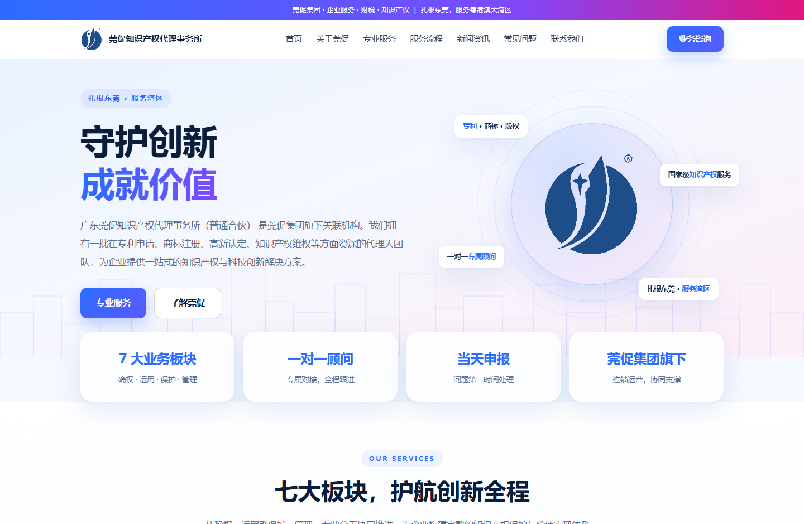
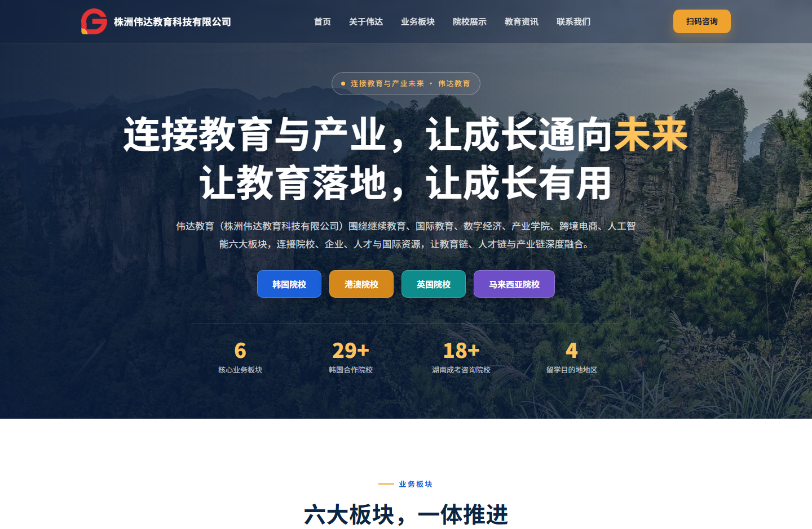
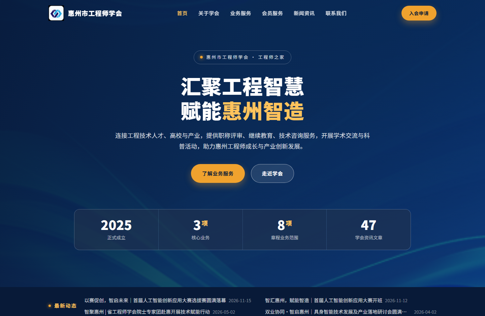
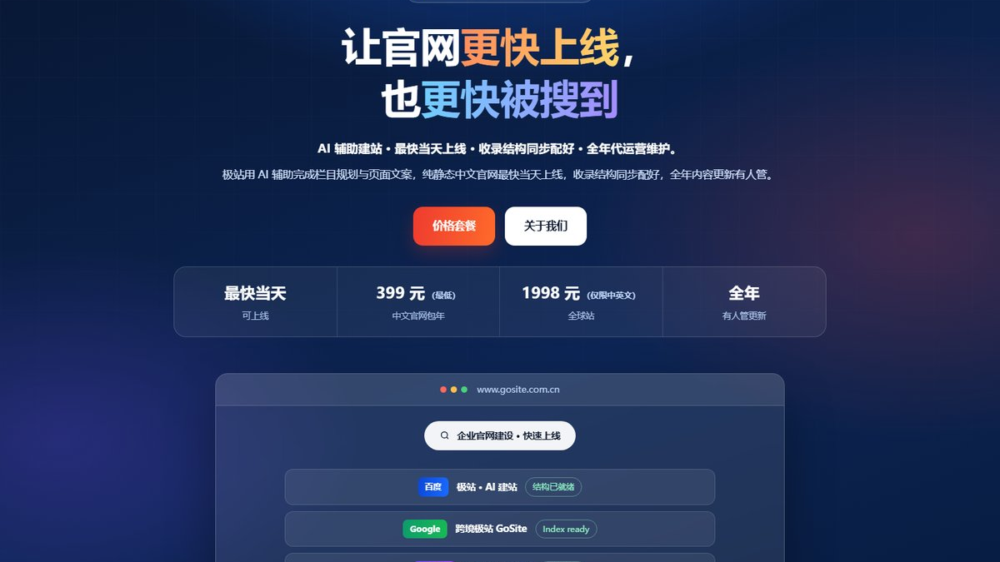
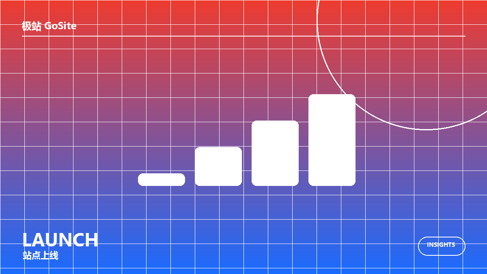
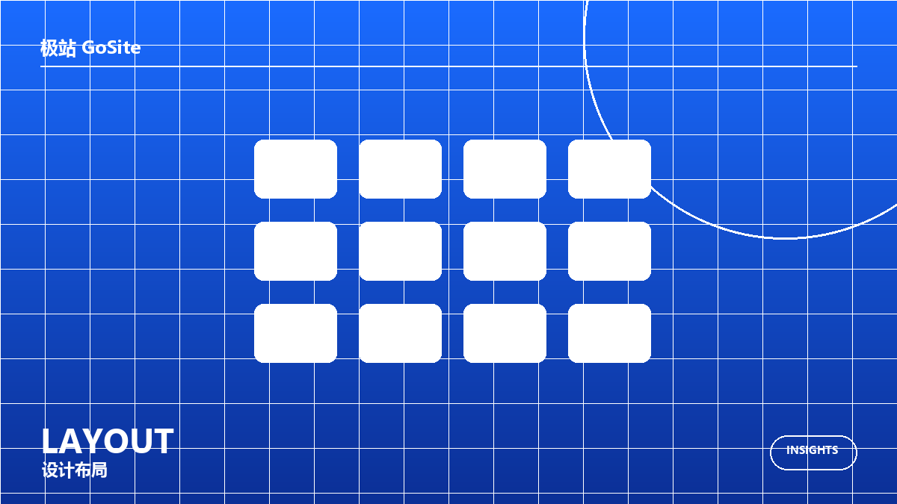
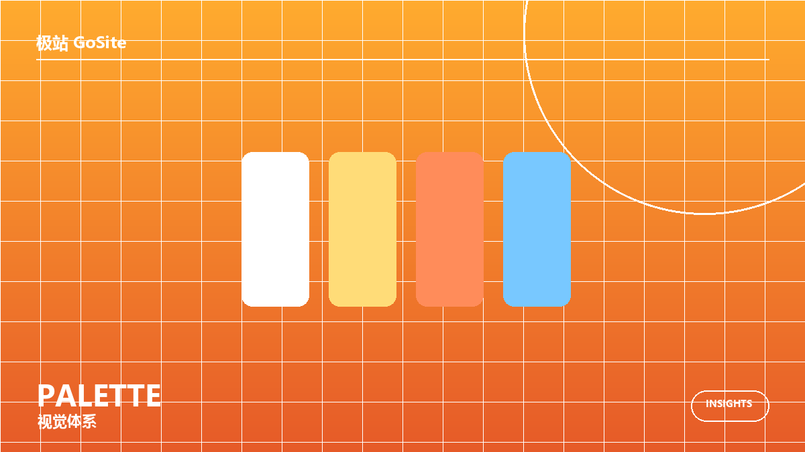
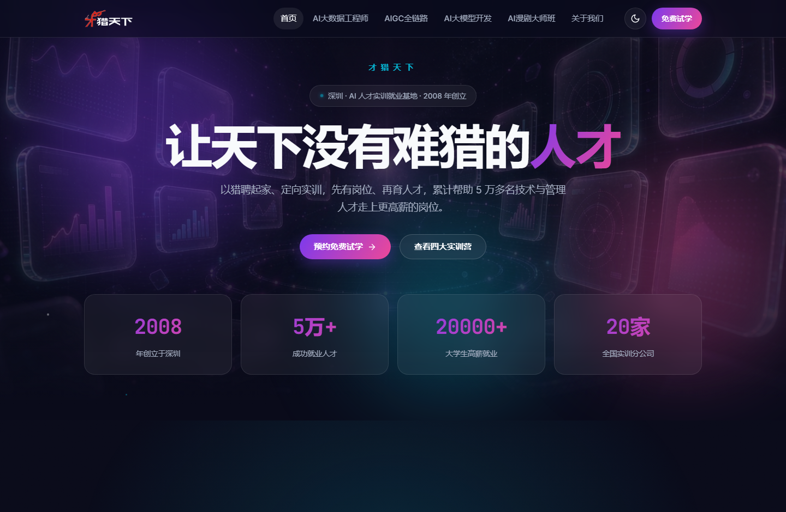
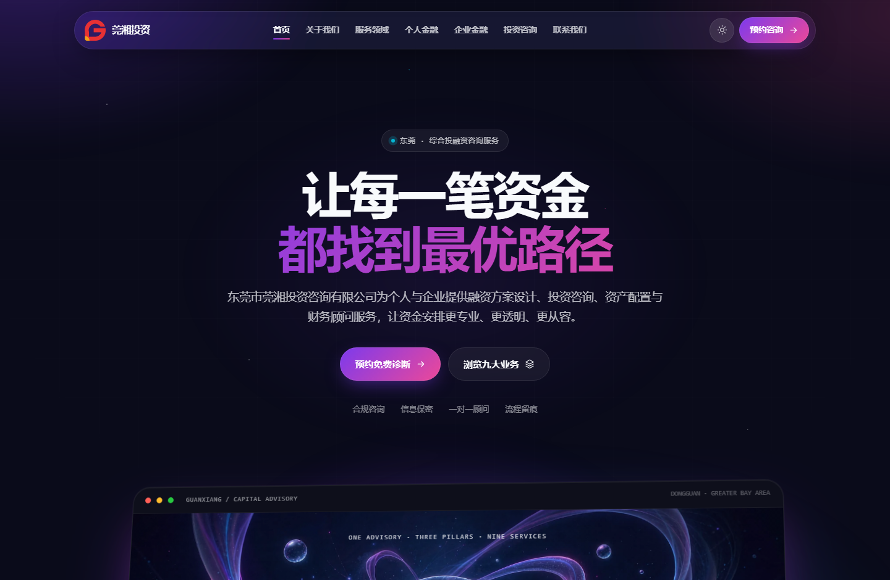
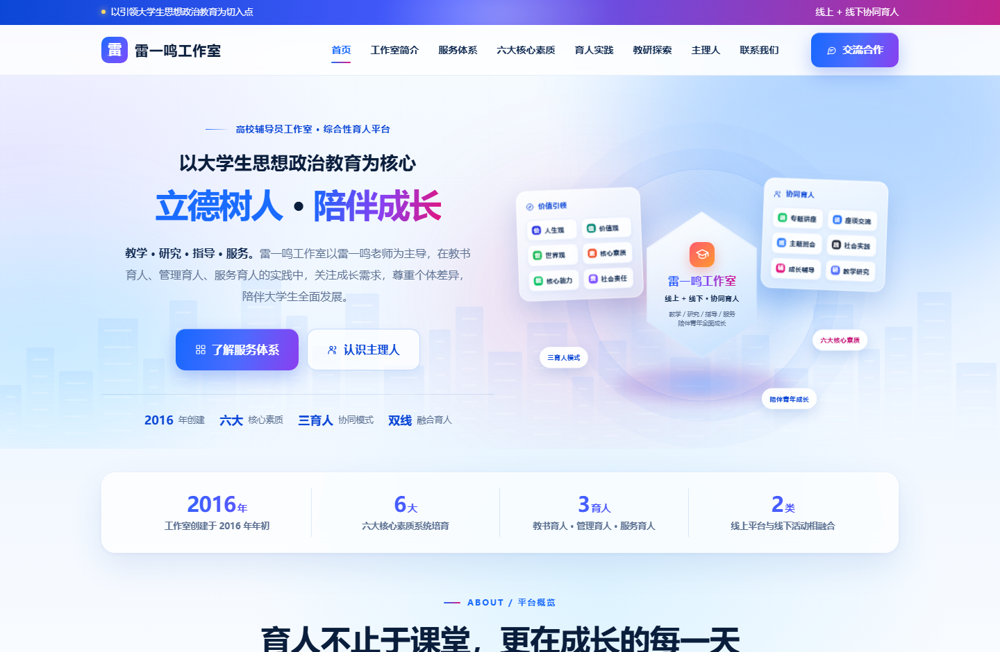

建站观察
建站观察没有文案团队，官网内容怎么写：中小企业的内容来源清单
中小企业没有专职文案，官网内容常常写不出来。讲清一份可复用的内容来源清单：现有资料、销售问答、产品说明与客户案例怎么变成官网正文。
阅读全文默认按时间排序，最新文章靠前；可按分类筛选，或翻页浏览全部内容。
建站观察中小企业没有专职文案，官网内容常常写不出来。讲清一份可复用的内容来源清单：现有资料、销售问答、产品说明与客户案例怎么变成官网正文。
阅读全文
建站观察什么时候重做官网？页面老旧、手机看不了、内容多年没更新、搜索找不到、客户问了却打不开——五个信号出现就该改。改版时哪些东西必须保留，哪些要重做。
阅读全文
建站观察官网上线后不能只看好不好看。用收录、访问、询盘三个指标判断效果，并知道每个指标背后该看什么、该做什么调整。
阅读全文 建站观察
建站观察全球站询盘表单字段要少、问题要具体、联系方式要留得合理，并给客户明确的回复预期，降低发需求的心理门槛。
阅读全文
建站观察全球站内容更新围绕产品变化、行业问题与客户疑问展开，按周期发布并保持语言版本同步，让客户有理由再来、搜索引擎常来。
阅读全文
建站观察拆解中小企业官网当天上线的完整流程：栏目规划、文案整理、设计确认与静态发布各一步，说明哪些资料要齐备、哪些环节可以并行，以及为什么纯静态架构能把周期压到最短。
阅读全文
建站观察用中小企业能听懂的方式讲清 SEO 与 GEO 的分工：SEO 让百度和谷歌收录并理解页面，GEO 让内容在不同国家语言与 AI 问答里被正确引用，并给出先做哪项的判断顺序。
阅读全文
建站观察说明官网全托管维护的具体内容：改文案换图、加栏目、发资讯、更新产品与收录结构复查，以及为什么无后台静态站更适合长期托管，让中小企业不用安排专人维护网站。
阅读全文
建站观察面向跨境电商企业的官网设计思路：首屏讲清公司定位与信任基础，产品按采购决策路径分层呈现，中英文两套内容各自写好，让海外客户先信公司再懂产品。
阅读全文
建站观察跨境官网做多语言本地化的实操三层：语言版本按市场重写、语言地域标注让谷歌正确分发、事实段落与结构化数据让 AI 问答能引用，配合全球加速与稳定收录。
阅读全文
建站观察出海产品展示站的页面结构做法：分类页按场景分组、详情页按采购问题组织、图片配替代文本、联系方式就近布置，让静态官网也能承接询盘。
阅读全文
建站观察商协会与集团官网不只是门面，更要让会员与公众找到、联系并持续看到。讲清关键词分工、名片与分享卡片、备案收录保障与媒体推广的具体做法。
阅读全文
建站观察面向海外客户的双语官网，重点是按目标市场重写关键词、声明语言地域关系、补齐可被 AI 引用的事实段落，配合全球加速与谷歌收录，让海外客户找到并愿意联系。
阅读全文
建站观察中小企业官网不需要复杂功能，重点是让客户搜得到、看得懂、愿意联系。讲清公司定位、产品服务与联系方式，配合收录结构与全年维护，就是一间够用的官网。
阅读全文
建站观察全球站先把 SEO 做扎实让页面被搜到，再用 GEO 让内容在不同语言与 AI 问答里被准确引用，两层按顺序落地才不浪费投入。
阅读全文
建站观察全球站展示公司实力要落在可核对的事实上：成立年限、生产或服务能力、合作市场、资质认证与真实案例，而不是抽象的形容词。
阅读全文
建站观察全球站获客优化从五个动作入手：关键词匹配搜索意图、产品按场景分组、页面回答采购问题、询盘入口就近布置、内容持续更新。
阅读全文
建站观察双语电子名片把电话、官网与身份做成可转发的一页；社交分享卡片让链接在聊天窗口自动带出标题、简介与方图，提升专业感。
阅读全文
建站观察全球站的长期价值不在一次询盘，而在内容、关键词与收录的积累：每个产品与服务页面都会成为长期入口，持续带来自然流量。
阅读全文
案例讲解莞促集团旗下知识产权代理机构，覆盖专利、商标、版权到涉外维权的一站式服务门户。
案例讲解
建站观察面向国内官网的 SEO 实操清单：一页一个主题、标题描述怎么写、正文事实段落、图片替代文本、站点地图与结构化数据，以及备案后如何推进百度收录。每一步都能直接照做。
阅读全文
建站观察面向出海网站的 GEO 实操清单：按目标国家写关键词、hreflang 语言标注、可被 AI 引用的事实段落、国际站点信号与谷歌收录推进，每步都能落地。
阅读全文
站点公告极站 GoSite 官网服务升级为标准版、尊享版与跨境极站三档：标准版 998 元/年重在展示，尊享版 2980 元/年含中文名片、分享卡片、GEO 与备案收录保障，跨境极站 5980 元/站点交付中英双语并确保谷歌收录。一次付三年送一年。
阅读全文
建站观察全球站 GEO 从四层入手：按市场重写内容、语言地域标注、可被 AI 引用的事实段落、地区信号一致，配合全球加速与持续维护。
阅读全文
建站观察海外客户访问慢会直接流失。讲清静态站点配合全球边缘加速为什么能让页面更快、更稳，以及它对收录和转化的影响。
阅读全文
案例讲解连接教育与产业未来的教育集团官网，继续教育、国际教育与产教融合六线并行。
案例讲解
建站观察全球站产品页要按采购决策顺序组织：是什么、用在哪、规格、包装交期、起订量与怎么联系，配清晰实拍图与替代文本。
阅读全文
建站观察出现海外询盘却靠翻译软件沟通、平台客户问有没有官网、参加海外展会没有落地页、竞品在谷歌排在前面——这四个信号说明该做全球站了。
阅读全文 行业资讯
行业资讯母公司官网与专业子公司官网同属一个品牌，关键词与内容容易互相分流。梳理多主体网站常见的SEO冲突，以及关键词分工、标题写法、结构化数据与互链的具体做法。
阅读全文
建站观察全球站联系入口要放电话、邮箱与海外常用即时通讯，按客户习惯排列，并在产品页、关于页与页脚就近布置。
阅读全文
建站观察全球站 SEO 按顺序做：目标市场关键词、每页独立标题描述、清楚的页面结构、站点地图与结构化数据、按周期更新。
阅读全文
案例讲解服务本地工程技术人才的学术性社团官网，职称评审、继续教育与技术咨询三线并行。
案例讲解
建站观察全球站首屏要放公司定位、主营品类与服务市场四组事实，再给一个明确的询盘入口。讲清首页展示的顺序与取舍。
阅读全文
建站观察全球业务展示不是把中文站翻成英文，而是让海外客户在谷歌上找到你、看懂你和你的产品。讲清中小企业做全球站的三个真实理由。
阅读全文
建站观察极站 · AI 建站把纯静态官网、收录结构与全年维护放在一起：从标题描述、站点地图、结构化数据到 hreflang 与国家关键词，说明一个中文官网如何被百度、谷歌与 AI 问答读懂。
阅读全文
站点公告极站 GoSite 官网 www.gosite.com.cn 正式上线。极站面向中小企业与机构提供 AI 建站服务：AI 辅助栏目规划与页面文案，纯静态中文官网最快当天上线，收录结构同步配好，全年内容更新由服务方代运营。标准版 998 元/年、尊享版 2980 元/年，跨境极站 5980 元/站点交付中英双语。
阅读全文
站点公告极站 · AI 建站官网 www.gosite.com.cn 正式上线：标准版 998 元/年、尊享版 2980 元/年，跨境极站 5980 元/站点交付中英双语，含收录结构、全球 CDN 与全年内容维护，欢迎咨询下单与服务商加盟。
阅读全文 行业资讯
行业资讯中小企业官网建设的关注点正在从页面是否上线，转向能否被百度、谷歌与 AI 问答读懂，以及上线后是否有人持续维护。
阅读全文 行业资讯
行业资讯面向海外市场的企业需要中英双语乃至更多语言版本，语言标注、当地关键词、币种与文化适配成为建站的新基础项。
阅读全文 行业资讯
行业资讯生成式引擎更倾向摘引含明确名称、数字与边界的事实段落，官网内容结构因此需要更清楚、更可引用。
阅读全文
建站观察以广东省湖南攸县商会官网为例，拆解组织型官网如何安排主视觉、数据、简介、服务体系与动态栏目，让长期可信度与信息可达性同时成立。
阅读全文 建站观察
建站观察拆解教育培训转化页如何用科技蓝建立信任、用橙红制造行动感，并让密集的课程参数保持可读。
阅读全文
建站观察从抓取、页面结构、站点地图与内容层级四个角度，说明纯静态官网在百度、谷歌与 AI 问答中的可读性优势。
阅读全文 建站观察
建站观察解析面向生成式引擎的内容组织方式：可被直接引用的事实、问答结构与结构化标注如何配合。
阅读全文
建站观察从品牌色、内容底色与强调色三层关系出发，说明不同类型机构官网的配色取舍与移动端注意点。
阅读全文
建站观察说明中英双语站点如何通过 hreflang、规范链接与目标市场用词，避免不同语言版本互相争抢收录。
阅读全文 案例讲解
案例讲解以乡情为纽带的异地商会门户，兼顾会员服务、资讯公开与线上商城。
案例讲解
案例讲解以岗位需求为先的 AI 人才实训基地转化型官网。
案例讲解 案例讲解
案例讲解面向政校企的数字经济智库与产教融合服务平台。
案例讲解 案例讲解
案例讲解用节能数据说话的综合节能服务商官网。
案例讲解
案例讲解合规优先、结构清晰的投融资咨询服务官网。
案例讲解 案例讲解
案例讲解把前沿生命科学理念讲成可长期坚持的日常饮食方案。
案例讲解
案例讲解以大学生思想政治教育为核心的综合性育人平台官网。
案例讲解